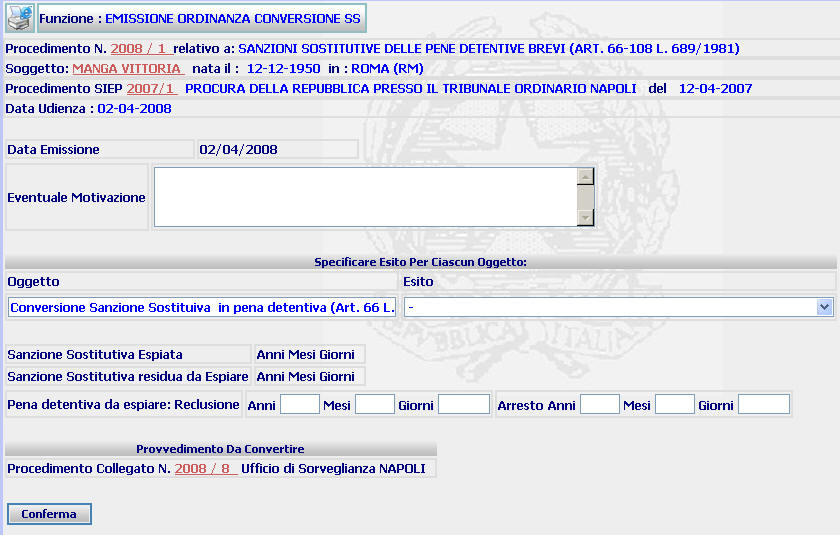
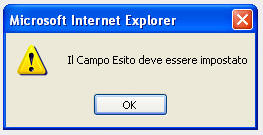

EMISSIONE ORDINANZA DI CONVERSIONE SANZIONE SOSTITUTIVA: La funzione consente di inserire l'esito del procedimento avente ad oggetto la conversione/revoca/trasformazione della sanzione sostitutiva indicando, in caso di conversione, la durata della pena detentiva da espiare. Tale ultima indicazione verrà riprodotta nel corpo dei documenti generati dal sistema.
LE MASCHERE VIDEO
La funzione viene realizzata attraverso la maschera sottostante, attraverso la quale è possibile visualizzare i dati del procedimento ed inserire l'esito del procedimento e la pena detentiva da espiare (nel caso di conversione della sanzione sostitutiva).
c

COME FARE PER ...
| Per visualizzare il dettaglio del procedimento Sius l'utente deve cliccare sul link relativo all'Anno/Numero del procedimento Sius evidenziato in rosso; |

| Per visualizzare il dettaglio del soggetto l'utente deve cliccare sul link relativo al cognome/nome del soggetto evidenziato in rosso; |

| Per visualizzare il dettaglio del procedimento Siep l'utente deve cliccare sul link relativo all'Anno/Numero del procedimento Siep evidenziato in rosso; |

| Per visualizzare il dettaglio del procedimento Sius dell'Ufficio di Sorveglianza collegato l'utente deve cliccare sul link relativo all'Anno/Numero del procedimento Sius evidenziato in rosso; |
| Per completare la fase di emissione dell'ordinanza
l'utente deve:
|
4.
Confermare i dati inseriti selezionando
il bottone

CAMPI
I campi da compilare sono i seguenti:
| Eventuale motivazione | Campo nel quale va inserita l'eventuale motivazione che si vuole far comparire sui provvedimenti generati dal sistema |
| Esito | Campo (obbligatorio) nel quale va inserito attraverso l'apposita tendina l'esito relativo all'oggetto di riferimento |
| Pena detentiva da espiare | Campo nel quale va inserita (nel caso di conversione della sanzione sostitutiva) la pena detentiva da espiare |
PULSANTI
E' presente il pulsante
 facente parte del gruppo di
pulsanti di "Uso Comune"
facente parte del gruppo di
pulsanti di "Uso Comune"
BOTTONI
Oltre ai comandi funzionali relativi al menù verticale è presente il seguente bottone:
|
COMANDI |
DESCRIZIONE |
|
|
A fronte di tale comando, il sistema dopo aver verificato la validità dei dati specificati, presenta la maschera di dettaglio ordinanza |
CONTROLLI
Il sistema effettua i seguenti controlli:
| Se si omette l'inserimento dell'esito relativi all'oggetto iscritto il sistema fornisce il seguente messaggio: |
